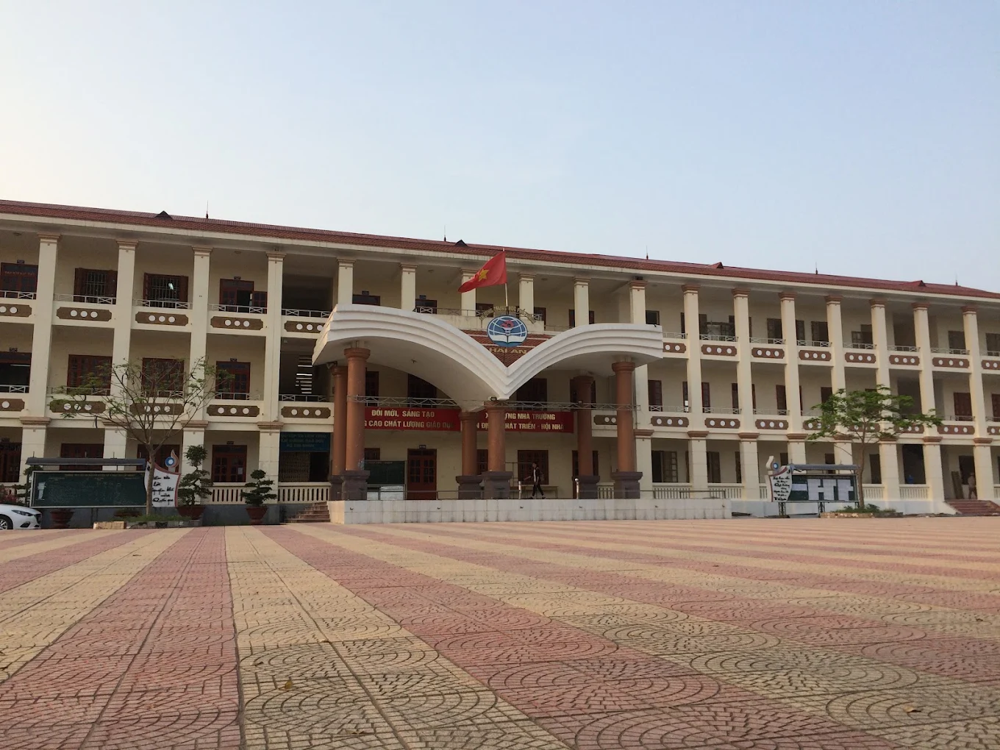

Trường THPT Hải An
Nơi mình có ba năm học đáng nhớ nhất thời học sinh.

Giới thiệu chung
Trường THPT Hải An nằm tại Số 1177 Ngô Gia Tự, Nam Hải, Hải An, Hải Phòng, được thành lập năm 2006. Trường nổi tiếng với truyền thống học tập, phong trào văn nghệ, thể thao....
- Địa chỉ
- Số 1177 Ngô Gia Tự, Nam Hải, Hải An, Hải Phòng
- Năm thành lập
- 2006
- Niên khóa của mình
- 2020 – 2023
- Lớp
- 10C5 - 11B5 - 12A5
- Cô chủ nhiệm
- Vũ Thị Bích Tần
Kỷ niệm đáng nhớ
Lớp 10Ngày đầu bước vào trường, làm quen bạn bè mới.
Lớp 11Hoạt động ngoại khóa, chuyến đi, giải thưởng...
Lớp 12Mùa thi cuối cấp và buổi lễ tri ân thầy cô.
Lời cảm ơn
Cảm ơn thầy cô và bạn bè đã đồng hành cùng mình suốt những năm tháng THPT.